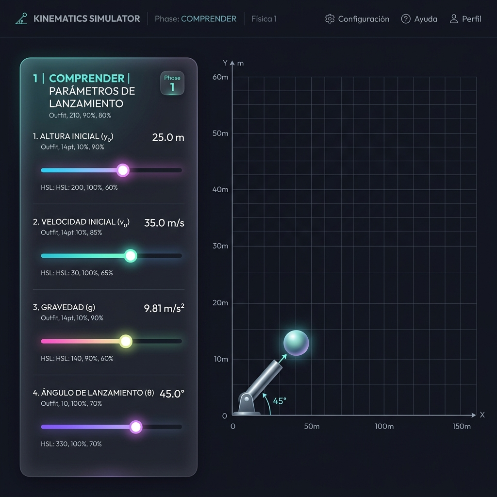
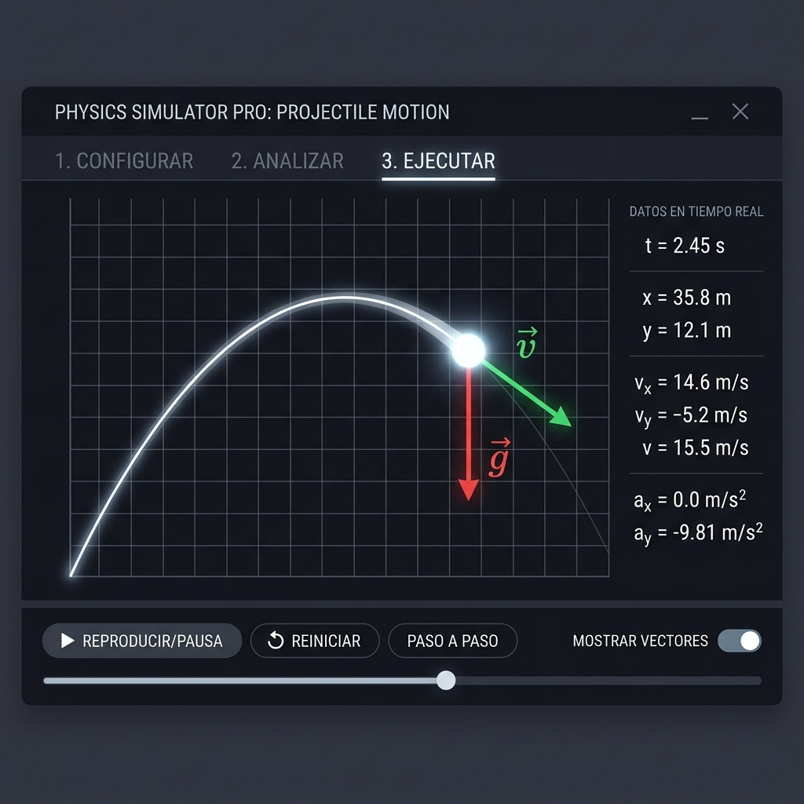
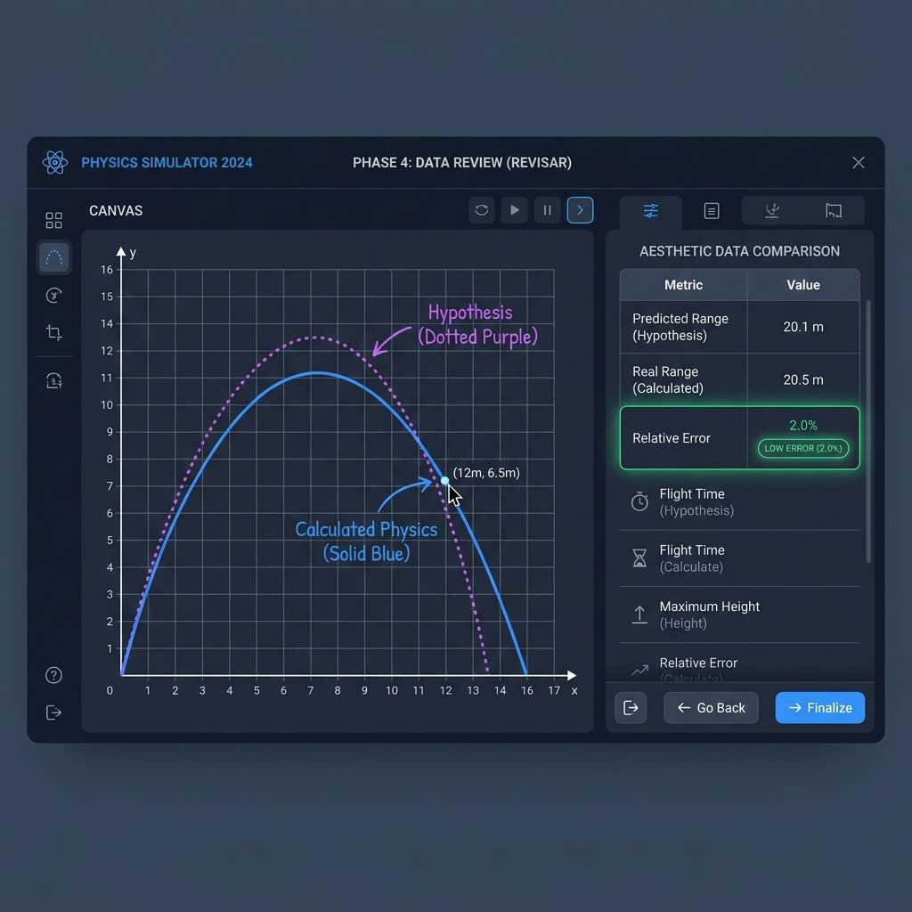

Guía Didáctica: Cinemática y Trayectorias
Modelo: Pólya-Marcos
Bienvenido al **Laboratorio Virtual de Física 1**. Esta guía interactiva ha sido diseñada para guiarte en el aprendizaje de la cinemática de caída libre y tiro parabólico. El laboratorio adopta la metodología de resolución de problemas de **George Pólya**, basándose en la investigación del **Profesor Marcos Chacón Castro (UNAB, 2021)** para promover tu razonamiento autónomo mediante la experimentación directa.
1. Conceptos Físicos de Cinemática en 2D
El movimiento bidimensional de proyectiles describe el desplazamiento de un cuerpo libre en el aire sin resistencia al viento. Según Galileo Galilei, este movimiento se puede descomponer en dos componentes totalmente independientes:
Eje Horizontal (Movimiento Rectilíneo Uniforme - MRU)
Dado que no existen fuerzas horizontales que actúen sobre la partícula, su velocidad en X permanece constante a lo largo de todo el trayecto:
x(t) = x₀ + vₓ₀ * t
vₓ(t) = vₓ₀
Eje Vertical (Movimiento Rectilíneo Uniformemente Variado - MRUV)
La gravedad actúa como una aceleración constante dirigida hacia abajo ($g = 9.81 \, m/s^2$), modificando la altura y velocidad en Y continuamente:
y(t) = y₀ + v_y₀ * t - 0.5 * g * t²
v_y(t) = v_y₀ - g * t
Donde la velocidad inicial se descompone según el ángulo $\theta$ de salida:
$v_{x0} = v_0 \cdot \cos(\theta)$ y
$v_{y0} = v_0 \cdot \sin(\theta)$.
2. Secuencia Didáctica del Simulador (Método de Pólya)
Para fomentar tu aprendizaje reflexivo, el simulador te guiará secuencialmente a través de cuatro fases didácticas obligatorias:
1 Comprender el Problema
Antes de disparar, debes identificar los parámetros de entrada y asimilar los conceptos vectoriales iniciales del movimiento en dos dimensiones.

Figura 1: Interfaz de la Fase 1. Muestra el panel translúcido de sliders (altura, velocidad, ángulo, gravedad) y el cuestionario didáctico de comprensión.
Instrucciones de la Fase 1:
- Regula los sliders de Altura Inicial (y₀), Velocidad Inicial (v₀) y Ángulo (θ) según el desafío planteado.
- Lee con atención el cuestionario sobre vectores en la tarjeta inferior y haz clic en la respuesta correcta. El simulador te dará retroalimentación inmediata y habilitará el progreso.
2 Concebir un Plan (Hipótesis)
Formular una hipótesis y estimar el comportamiento de las trayectorias es vital para comprender la relación de los coeficientes de movimiento.
Instrucciones de la Fase 2:
- Dibujo en Canvas: Haz clic izquierdo y arrastra tu ratón (o pulsa la pantalla táctil) directamente sobre el Canvas negro del simulador para trazar la curva estimada que crees que recorrerá la partícula en el aire.
- Alcance Predicho: Asigna en el slider lateral de la Fase 2 en qué marca de distancia en metros estimas que impactará el proyectil. Esto creará un banderín de meta amarillo en el suelo métrico del simulador.
3 Ejecutar el Plan (Simulación Activa)
Aquí ejecutas tu plan experimentando directamente y observando en tiempo real las magnitudes físicas vectoriales en el ciclo de animación de alta definición.

Figura 2: Interfaz de la Fase 3. Muestra la partícula en pleno vuelo describiendo la parábola física real, los vectores Velocidad (verde esmeralda) y Gravedad (rojo brillante), y la telemetría dinámica.
Instrucciones de la Fase 3:
- Presiona Iniciar Lanzamiento. La bola azul se animará a 60 FPS estables.
- Observa las flechas de los vectores: la Velocidad (flecha verde esmeralda) cambia su ángulo y magnitud dinámicamente en respuesta a la gravedad, permaneciendo tangente a la curva. La Gravedad (flecha roja brillante) permanece constante apuntando perpendicularmente hacia abajo.
4 Examinar la Solución ("Mirar hacia atrás")
La etapa de autoevaluación. Contrasta tus predicciones e hipótesis frente al resultado físico y comprende las desviaciones de tus curvas.

Figura 3: Interfaz de la Fase 4. Muestra la superposición geométrica de tu hipótesis (línea púrpura punteada) contra la trayectoria física real (azul), la tabla de error porcentual relativo y el análisis pedagógico del tutor Polya.
Instrucciones de la Fase 4: